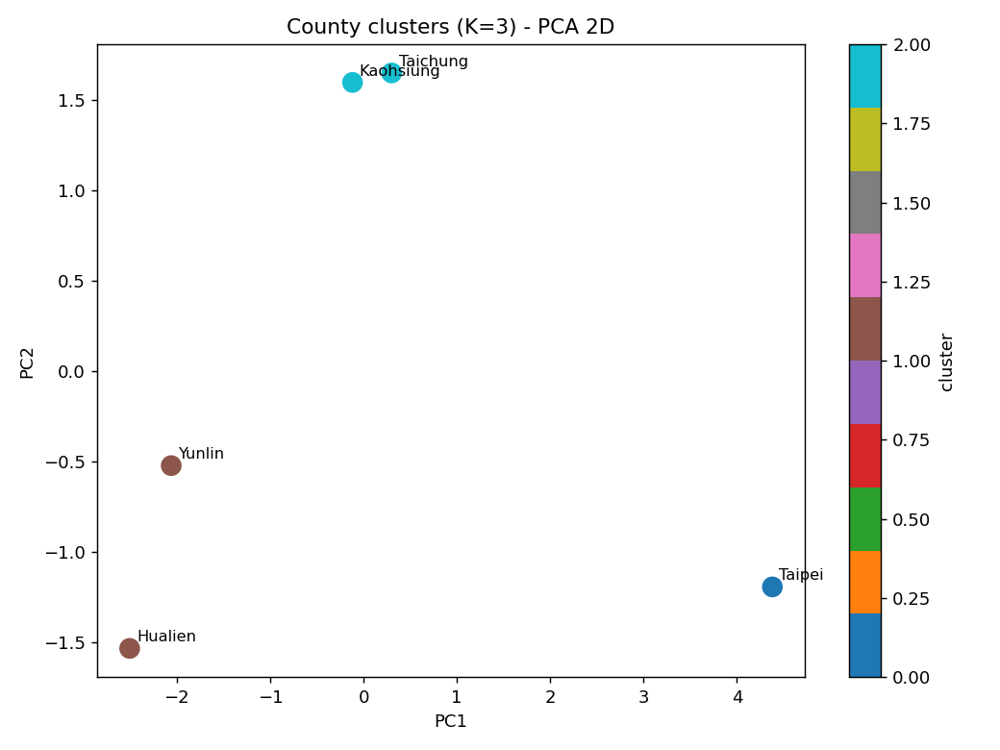
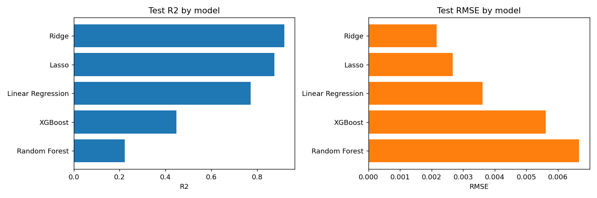
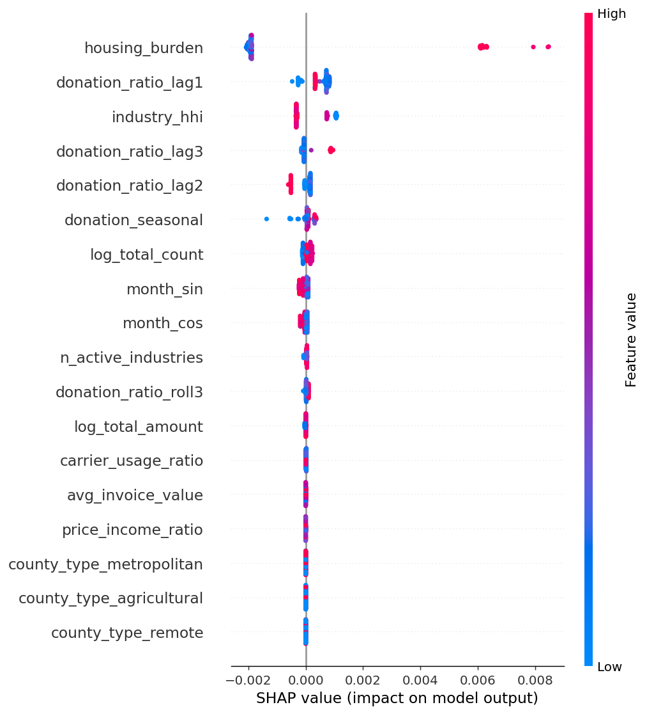

5/6
scope counties available
Ridge
best test model
0.919
test R2
120
priority rows
Data Readiness
CONDITIONAL
Missing requested county data: 連江縣. Formal modeling uses only available in-scope counties and does not add substitute data.
Priority Scores
| rank | county_name | month | predicted_donation_ratio | invoice_count | expected_donated_count | normalized_priority_score |
|---|---|---|---|---|---|---|
| 1 | 台北市 | 2024-05 | 0.0242 | 178,599,146 | 4323073.7100 | 1.0000 |
| 2 | 台北市 | 2024-07 | 0.0230 | 179,297,688 | 4119145.0423 | 0.9527 |
| 3 | 台北市 | 2024-11 | 0.0221 | 185,696,567 | 4109742.1368 | 0.9505 |
| 4 | 台北市 | 2024-06 | 0.0236 | 174,431,178 | 4108210.2147 | 0.9502 |
| 5 | 台北市 | 2024-08 | 0.0224 | 183,443,397 | 4108094.2107 | 0.9502 |
| 6 | 台北市 | 2023-05 | 0.0237 | 168,545,559 | 3994290.3600 | 0.9238 |
| 7 | 台北市 | 2024-12 | 0.0213 | 186,912,671 | 3985178.2825 | 0.9216 |
| 8 | 台北市 | 2023-07 | 0.0229 | 172,601,473 | 3960142.2642 | 0.9158 |
| 9 | 台北市 | 2024-04 | 0.0233 | 169,902,851 | 3955955.8349 | 0.9149 |
| 10 | 台北市 | 2023-08 | 0.0226 | 174,927,157 | 3948332.6812 | 0.9131 |
| 11 | 台北市 | 2024-03 | 0.0225 | 175,684,907 | 3947824.9380 | 0.9130 |
| 12 | 台北市 | 2024-10 | 0.0221 | 176,730,529 | 3907875.8928 | 0.9037 |
Model Metrics
| model | test_RMSE | test_R2 | train_R2 |
|---|---|---|---|
| Ridge | 0.0022 | 0.9186 | 0.9437 |
| Lasso | 0.0027 | 0.8756 | 0.9305 |
| Linear Regression | 0.0036 | 0.7725 | 0.9545 |
| XGBoost | 0.0056 | 0.4488 | 0.9974 |
| Random Forest | 0.0067 | 0.2229 | 0.9868 |
Clustering
Best K: 3
| county_label | county_english_name | county_name | cluster | pc1 | pc2 |
|---|---|---|---|---|---|
| 1 | Taichung | 台中市 | 2 | 0.3017 | 1.6500 |
| 2 | Taipei | 台北市 | 0 | 4.3788 | -1.1928 |
| 15 | Hualien | 花蓮縣 | 1 | -2.5040 | -1.5328 |
| 17 | Yunlin | 雲林縣 | 1 | -2.0590 | -0.5220 |
| 18 | Kaohsiung | 高雄市 | 2 | -0.1174 | 1.5975 |
Cluster PCA

Ridge Explanation
| feature | standardized_coefficient | abs_standardized_coefficient |
|---|---|---|
| donation_ratio_lag3 | 0.0029 | 0.0029 |
| avg_invoice_value | -0.0020 | 0.0020 |
| carrier_usage_ratio | 0.0012 | 0.0012 |
| donation_ratio_roll3 | 0.0010 | 0.0010 |
| donation_seasonal | 0.0009 | 0.0009 |
| log_total_count | 0.0007 | 0.0007 |
| industry_hhi | -0.0005 | 0.0005 |
| month_cos | -0.0004 | 0.0004 |
| county_type=remote | -0.0004 | 0.0004 |
| county_type=metropolitan | 0.0003 | 0.0003 |
XGBoost SHAP
| feature | mean_abs_shap |
|---|---|
| housing_burden | 0.0028 |
| donation_ratio_lag1 | 0.0006 |
| industry_hhi | 0.0005 |
| donation_ratio_lag3 | 0.0002 |
| donation_ratio_lag2 | 0.0002 |
| donation_seasonal | 0.0001 |
| log_total_count | 0.0001 |
| month_sin | 0.0001 |
| month_cos | 0.0001 |
| n_active_industries | 0.0000 |
Model Comparison Plot

SHAP Summary Plot

Data Limitations
The final analysis is scoped to the available project counties in the encoded data. Lienchiang County is documented as a data gap. The train/test split is time based, with train years 2019, 2020, 2022 and test years 2023, 2024. The source data has a coverage gap, so lag features are date-joined and missing cross-gap lags are excluded from training.